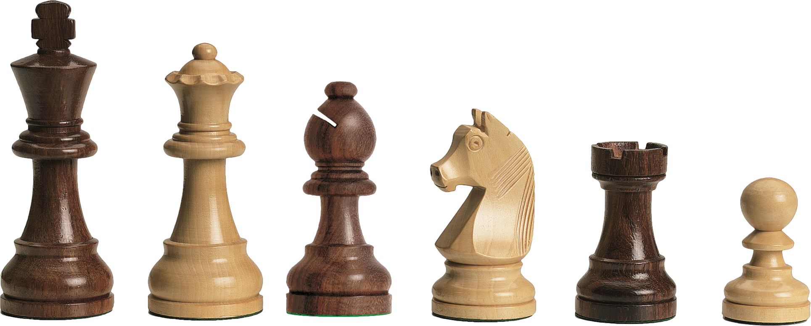

Movimientos
♛ El Rey se puede mover en cualquier dirección (vertical, horizontal y diagonales) avanzando o retrocediendo una sola casilla (excepto en el enroque, en el cual se mueve 2 casillas —enroque corto— o 3 casillas —enroque largo—).
♚
La Reina o Dama también se puede mover en cualquier dirección (vertical, horizontal y diagonales) avanzando o retrocediendo en el tablero el número de casillas que se desee, hasta topar con otra pieza o el borde del tablero.
♝
El Alfil solo se puede mover en dirección diagonal, tantas casillas como se desee, pero siempre en diagonal y en el color que le pertenece.
♜
La Torre solo se puede mover en las direcciones verticales y horizontales, no en diagonal, las casillas que se desee.
♞
El Caballo, según la definición oficial, se puede mover a la casilla más cercana que no se encuentre en su propia fila, columna o diagonal, aunque para simplificar se dice que se mueve avanzando 2 casillas en vertical y una en horizontal, o viceversa, realizando un movimiento de ‘L’, siendo la única pieza que puede saltar por encima de las demás piezas.
♟
El Peón puede avanzar una o dos casillas en dirección vertical en su primer movimiento, después de adelantado por primera vez solo puede avanzar una casilla, a diferencia del resto de piezas no puede ir hacia atrás y no puede capturar las piezas contrarias que se encuentran en la misma dirección en la que se mueve, solo podrá hacerlo si se encuentran a una casilla en diagonal respecto a él (excepto en la toma de peón al paso). Un peón tiene la capacidad de transformarse en la pieza que su jugador desee (normalmente en dama) si es capaz de alcanzar la última fila del tablero opuesta a la de su bando, por lo que un peón puede adquirir un enorme poder táctico en determinadas posiciones donde no tiene oposición para "coronar" (peón pasado).
